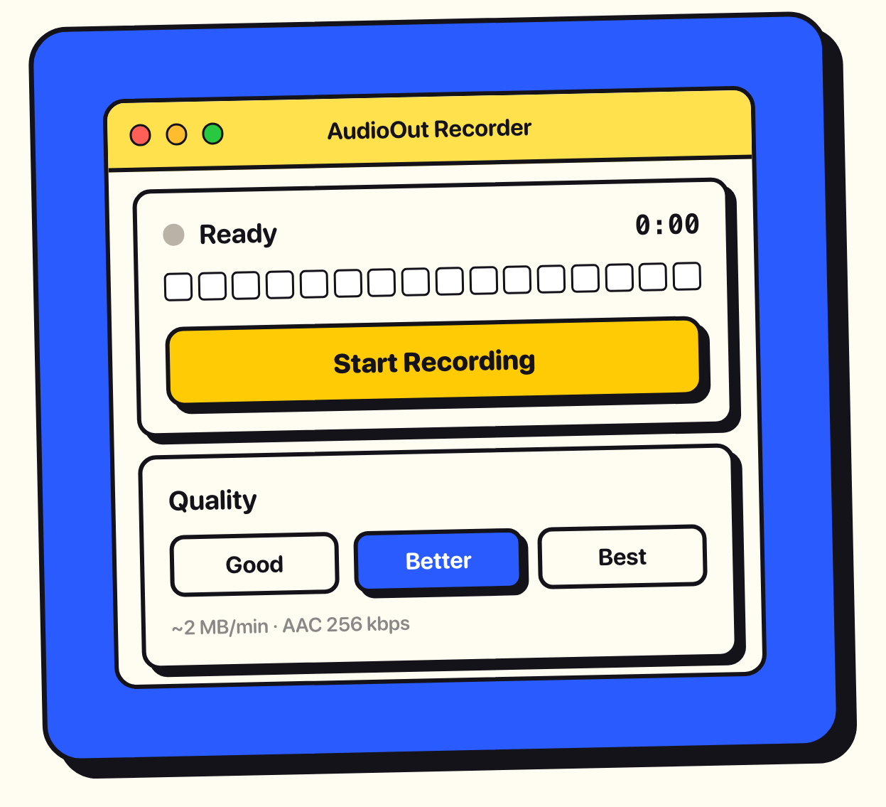
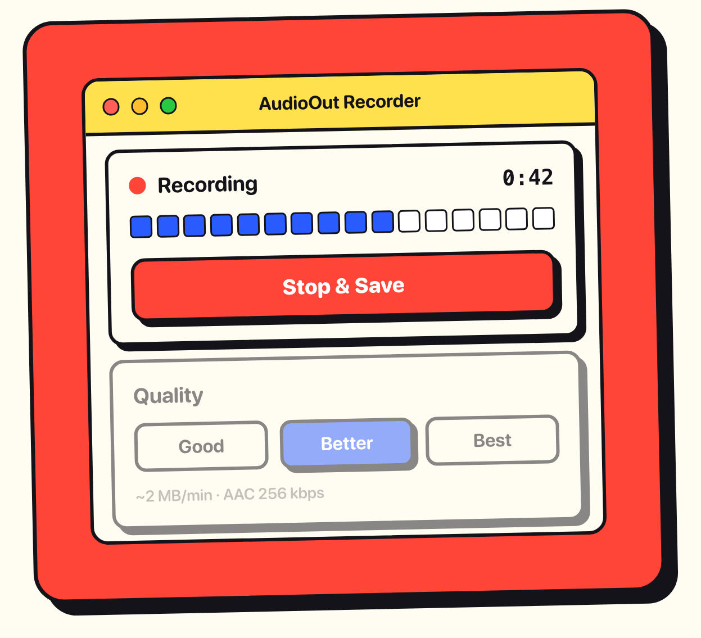
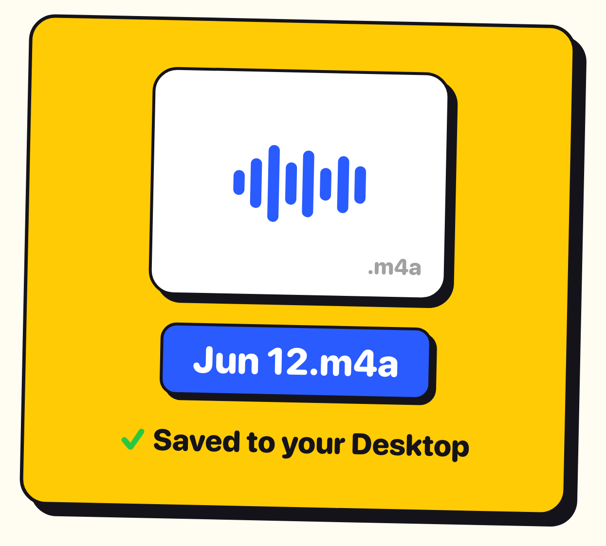
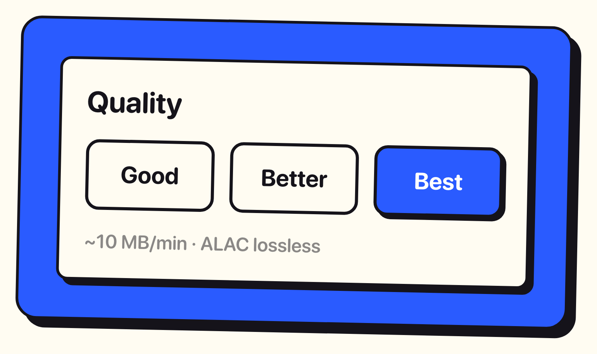

AudioOut Recorder captures the sound your Mac is playing and saves it to your Desktop as a clean .m4a file. No microphone, no screen recording.
Get it on the Mac App Store $0.99 A one-time purchase. macOS 13 or later.Music, calls, videos, games.

A level meter and a timer.

Saved as a dated .m4a file.

AAC, or Apple Lossless.

Small files for quick clips.
The default. Crisp and compact.
An exact copy, for when it matters.
AudioOut Recorder uses the macOS Screen Recording permission only to reach the system audio stream. It never records video or screen content, and it collects no data.